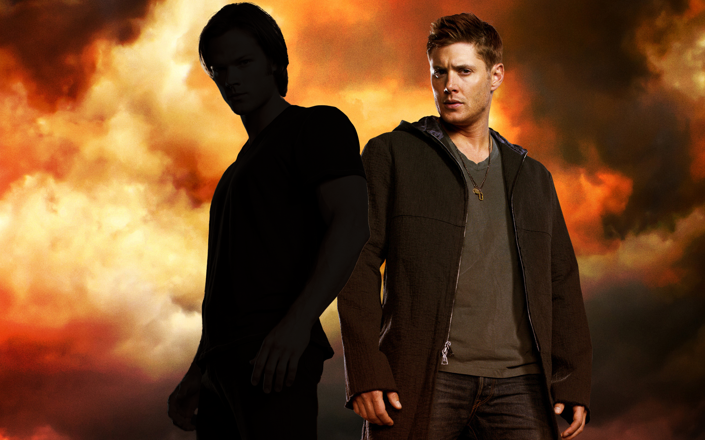

Dean Winchester
Dean Winchester (b. January 24, 1979 – d. 2025) was a human and hunter as well as a member of the Men of Letters with his younger brother Sam. He and his brother are members of the Winchester and Campbell families. Through his father, Dean is the older half-brother of Adam Milligan. Dean is also the destined vessel of the Archangel Michael. He and Sam are also the surrogate sons of the late Bobby Singer. Dean is best friends with the angel Castiel, close friend to the late prophet Kevin Tran, and reluctant ally of Crowley. Dean has an ex-girlfriend, Lisa Braeden, who he lived with for a year when he thought Sam was in Hell. She has a child named Ben, who Dean acted as a father for during that year. Dean's biological child was an amazon named Emma. He is also the former apprentice of Alastair.
Trivia
- Dean has killed the most main antagonists in the series, with four. He killed Azazel, Dick Roman, Abaddon, and Lucifer. He's also killed secondary antagonists, Ruby, Zachariah, Eve, Cain, and the Styne Family. According to Rowena MacLeod in Regarding Dean, his kill count numbers in the scores.
- As a demon, he was the secondary antagonist for Season 10.
- Dean is the first human to kill an angel on the series. He has the highest kill count of angels for a human and the highest number of powerful angels killed for anyone aside from an angel.
- Dean becomes the first human to kill an archangel when he kills Lucifer in Let the Good Times Roll, albeit while powered by the Apocalypse World Michael.
- Dean has killed several angels on the series: Zachariah, a Rogue Angel, several Prison Camp Angels and the Executioner Angel alongside Arthur Ketch, one of Arthur and Charlie's Captors and Lucifer with the help of Michael.